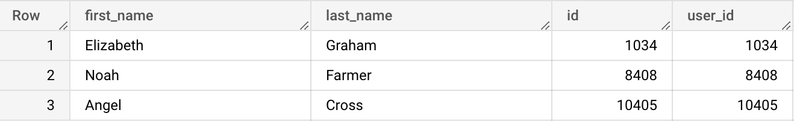

Here's the schema of the dataset we will be working with in this lesson:

The SELECT command allows us to display the content of a specific table. The general syntax is SELECT column_1, column_2, ..., column_n FROM table_name. In the example below, we use the wildcard symbol '*', which "asks" the SELECT to display all the table's columns.
We can add comments to our code to make it clearer and more maintainable. -- is used for single-line comments, and /* */ is used for multi-line comments.
Type the query below in the BigQuery console and run it.
/*
This is a multiple-line comment
for longer notes
*/
SELECT * -- This is a single-line comment
FROM bigquery-public-data.thelook_ecommerce.users;
When writing your query, BigQuery will show before you run it, how much data your query will process. Cost-wise, you should worry only about multi-gigabytes queries. Try to minimize query size in general by avoiding to display unneeded columns.
After running your query, BigQuery will show you the total number of results returned by your query and paginate them if they are above fifty.
You can select specific columns by writing their names separated by a comma.
Type the query below in the BigQuery console and run it.
SELECT id, name
FROM bigquery-public-data.thelook_ecommerce.distribution_centers;
Example results:
You can choose to display a column with a different name from the original, by using the AS keyword. That's called aliasing.
Type the query below in the BigQuery console and run it.
SELECT first_name, last_name, id AS user_id
FROM bigquery-public-data.thelook_ecommerce.users;
Example results:

In addition to the values of the original columns, you can instruct the SELECT command to display the result of a calculation. In BigQuery, by default a column resulting from a calculation will get assigned a name like _f0 or _f1. It's a good idea to alias it with the AS keyword.
SELECT id,
name,
cost,
cost * 1.2 AS increased_cost
FROM bigquery-public-data.thelook_ecommerce.products;
Example results:

bigquery-public-data.thelook_ecommerce.products
Write a query that will display a new column named margin showing the difference between the retail_price and the cost columns.
SELECT id,
name,
cost,
retail_price,
retail_price - cost AS gross_margin
FROM bigquery-public-data.thelook_ecommerce.products;
bigquery-public-data.thelook_ecommerce.products
Write a query that will display the id, name, retail_price columns, plus a new column called retail_price_increased that shows retail prices increased by 10%.
SELECT id,
name,
retail_price,
retail_price * 1.1 AS retail_price_increased
FROM bigquery-public-data.thelook_ecommerce.products;
bigquery-public-data.thelook_ecommerce.products
Write a query that will display:

SELECT id,
name,
cost,
retail_price,
retail_price - cost AS gross_margin,
retail_price * 1.1 AS retail_price_increased,
(retail_price * 1.1 - cost) AS retail_price_increased_margin
FROM bigquery-public-data.thelook_ecommerce.products;